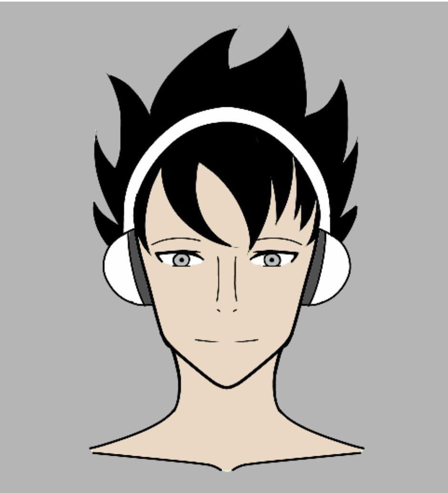
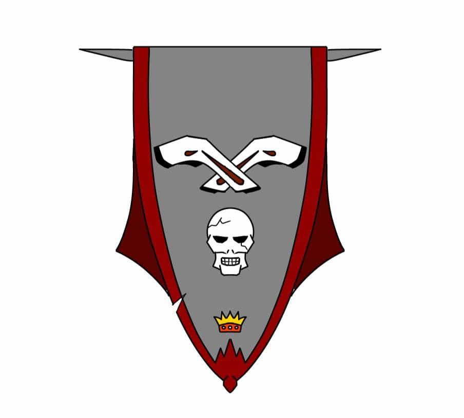

Somos un muy pequeño grupo que está conformado por 3 personas los cuales somos:
Es un estudiante de Ingenieria Informática, le gusta leer, escribir y hacer música. En sus ratos libres escribe historias o crea música. Desde hace mucho tiempo ha querido escribir una gran historia que deje a todos boquiabiertos y lo hará sin duda alguna.
Es un estudiante de Ingeniería Informática, le gusta leer, dibujar y jugar videojuegos. Fue el que propuso la idea de crear una empresa que se enfocara en el desarrollo de Videojuegos.
Como ven, es una piedra, no hay mucho que comentar (es broma), es un estudiante de Ingeniería Informática y de Diseño Gráfico. En sus tiempos libres juega videojuegos, lee y estudia mucho sobre diferentes tópicos, dice que siempre hay que estar preparado para cualquier cosa.
Luego de haber conocido un poco más de nosotros, nos queda decir que a pesar de que somos un grupo pequeño, poco a poco iremos creciendo, a medida que nuestro proyecto avance nuestro grupo de trabajo también irá creciendo.